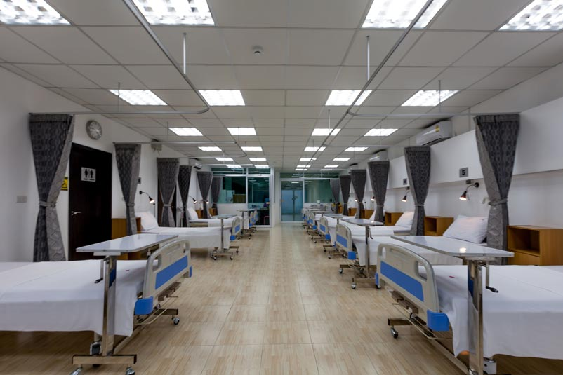

Interior Design
Our interior design services are specifically curated to meet the unique needs of hospitals, aiming to create spaces that are not only functional but also conducive to healing and well-being. We understand the importance of creating environments that promote a sense of comfort, calmness, and positivity for patients, visitors, and healthcare professionals alike.
With a focus on evidence-based design principles, we collaborate closely with hospital administrators, architects, and interior designers to develop innovative solutions that optimize patient outcomes and enhance the overall healthcare experience. From designing patient rooms and waiting areas to selecting furniture, finishes, and artwork, we pay meticulous attention to every detail to create spaces that foster healing, promote relaxation, and support the delivery of high-quality care.
Here is the list of the works we do for the interior of your hosptal:
1. Modular Operation Theatre with Full Equipment
A modular operation theatre is a specialized medical facility designed for surgical procedures. Equipped with state-of-the-art medical technology including surgical lights, anesthesia systems, imaging devices, and monitoring systems. Provides a sterile and controlled environment to minimize the risk of infections during surgeries.
2. 5 Star Room Service

Offers luxurious accommodations and personalized services comparable to a 5-star hotel. Includes amenities such as high-quality bedding, gourmet meals, concierge services, and housekeeping. Ensures a comfortable and relaxing environment for patients and their families.
3. Single Room Service
Provides private accommodations for patients without sharing facilities with other patients. Offers enhanced privacy and comfort, allowing patients to recuperate in a more personalized environment. Ideal for patients who prefer solitude or require isolation due to medical reasons.
4. Single Room + Class 1 Staff
Combines the benefits of a single room with the presence of highly skilled Class 1 medical staff. Patients receive individualized care and attention from qualified healthcare professionals. Ensures optimal patient safety and quality of care in a private setting.
5. Twins Sharing + Class 1 Staff
Offers shared accommodations for two patients along with the presence of Class 1 medical staff. Patients benefit from companionship while still receiving high-quality medical care. Suitable for patients who prefer shared accommodations or require support from a companion during their stay.
6. Max 3 Sharing + Class 1 Staff
Provides shared accommodations for up to three patients along with Class 1 medical staff availability. Allows patients to share the cost of accommodations while still receiving attentive medical care. Offers a balance between affordability and quality healthcare services.
7. General Ward with 360 Degree Rotating Modular Bed
Features a general ward setup with multiple patient beds and shared facilities. Each bed is equipped with a 360-degree rotating modular design, providing flexibility and comfort for patients. Allows for easy adjustment of bed positions to accommodate patient needs and medical procedures.
8. Hassle-Free Service
Ensures a seamless and stress-free experience for patients and their families. Streamlines administrative processes, appointments, and billing procedures. Focuses on delivering efficient and responsive healthcare services with minimal disruptions.
At Kalika Enterprises, we are committed to creating healing environments that inspire hope, comfort, and healing, contributing to the well-being of patients and the success of healthcare organizations.